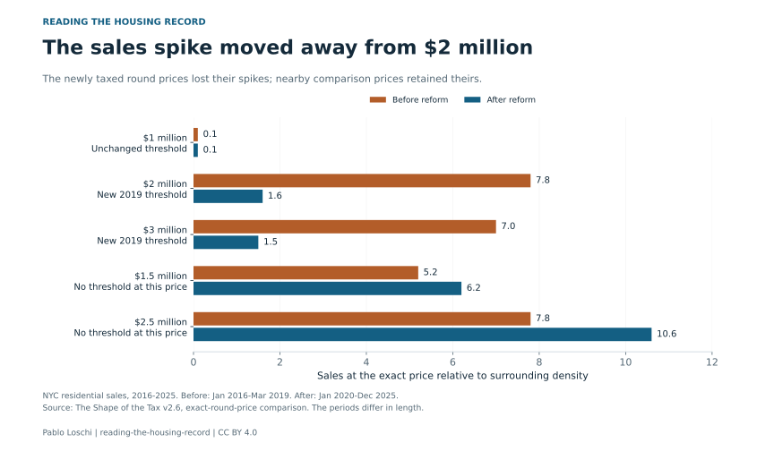

Buying & finance
The cash discount shrinks after screening possible family transfers
Removing deeds with matching buyer and seller surnames roughly halves the measured price gap. A missing mortgage match also needs checking.
Public records, explained by Pablo Loschi
New York home prices and taxes, explained through the records behind them.
Start here · Buying & taxes
At $1,999,999, the buyer’s tax is about $5,000 lower than at $2 million under the 2019 rules. Sales shifted around that line. House and condo buyers also face a recording tax when they take a mortgage.
Read the story Try the tax example
The cash discount, foreclosure amounts and the sales missing from linked-record comparisons.
Buying & finance
Removing deeds with matching buyer and seller surnames roughly halves the measured price gap. A missing mortgage match also needs checking.
Prices & records
A bid or discharged debt can enter the sales data as a price. Screening those transfers changes the measured path through the financial crisis.
Data & neighbourhoods
The same matching rules reach 78.9% of eligible Manhattan condo sales and 44.7% in the Bronx. Financing comparisons inherit that gap.
Download the charts and their data, check the source notes or contact me about a finding.